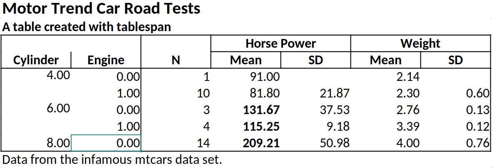

Create satisficing tables in R the formula way.
The objective of tablespan is to provide a “good enough” approach to creating tables in R with simple formulas (inspired by tables). To this end, tablespan builds on the awesome packages openxlsx and gt.
Tables created with tablespan can be exported to:
Installation
tablespan is not yet available from CRAN. To install from GitHub, run the following lines:
Introduction
tablespan assumes that you already have a perfectly summarized table that you now want to share. All you need are some table headers with spanners without investing much time into making it look perfect. This is what tablespan was designed for.
Let’s assume we want to share the following table:
library(dplyr)
data("mtcars")
summarized_table <- mtcars |>
group_by(cyl, vs) |>
summarise(N = n(),
mean_hp = mean(hp),
sd_hp = sd(hp),
mean_wt = mean(wt),
sd_wt = sd(wt))
#> `summarise()` has grouped output by 'cyl'. You can override using the `.groups`
#> argument.
print(summarized_table)
#> # A tibble: 5 × 7
#> # Groups: cyl [3]
#> cyl vs N mean_hp sd_hp mean_wt sd_wt
#> <dbl> <dbl> <int> <dbl> <dbl> <dbl> <dbl>
#> 1 4 0 1 91 NA 2.14 NA
#> 2 4 1 10 81.8 21.9 2.30 0.598
#> 3 6 0 3 132. 37.5 2.76 0.128
#> 4 6 1 4 115. 9.18 3.39 0.116
#> 5 8 0 14 209. 51.0 4.00 0.759Now we want to create a table where we show the grouping variables as row names and also create spanners for the horse power (hp) and the weight (wt) variables. The result should look something like this:
| | Horse Power | Weight |
| Cylinder | Engine | Mean | SD | Mean | SD |
| -------- | ------ | ----- | --- | ---- | -- |
| | |Creating a Basic Table
In tablespan, the table headers are defined with a formula approach inspired by the tables package. For example, cyl ~ mean_hp + sd_hp defines a table with cyl as the row names and mean_hp and sd_hp as columns. The output will look as follows:
library(tablespan)
tablespan(data = summarized_table,
formula = cyl ~ mean_hp + sd_hp)
#>
#> | cyl | mean_hp sd_hp |
#> | --- - ------- ----- |
#> | 4 | 91 |
#> | 4 | 81.8 21.87 |
#> | 6 | 131.67 37.53 |
#> | ... | ... ... |Note that the row names (cyl) are in a separate block to the left.
Adding Spanners
Spanners are defined using braces and spanner names. For example, the following defines a spanner for mean_hp and sd_hp with the name Horsepower: cyl ~ (Horsepower = mean_hp + sd_hp).
tablespan(data = summarized_table,
formula = cyl ~ (Horsepower = mean_hp + sd_hp))
#>
#> | | Horsepower |
#> | cyl | mean_hp sd_hp |
#> | --- - ---------- ----- |
#> | 4 | 91 |
#> | 4 | 81.8 21.87 |
#> | 6 | 131.67 37.53 |
#> | ... | ... ... |Spanners can also be nested (e.g., cyl ~ (Horsepower = (Mean = mean_hp) + (SD = sd_hp)).
tablespan(data = summarized_table,
formula = cyl ~ (Horsepower = (Mean = mean_hp) + (SD = sd_hp)))
#>
#> | | Horsepower |
#> | | Mean SD |
#> | cyl | mean_hp sd_hp |
#> | --- - ---------- ----- |
#> | 4 | 91 |
#> | 4 | 81.8 21.87 |
#> | 6 | 131.67 37.53 |
#> | ... | ... ... |Renaming Columns
Variable names in an R data.frame are often very technical (e.g., mean_hp and sd_hp). When sharing the table, we may want to replace those names. In the example above, we may want to replace mean_hp and sd_hp with “Mean” and “SD”. In tablespan renaming variables is achieved with new_name:old_name. For example, cyl ~ (Horsepower = Mean:mean_hp + SD:sd_hp) renames mean_hp to Mean and sd_hp to SD:
tablespan(data = summarized_table,
formula = cyl ~ (Horsepower = Mean:mean_hp + SD:sd_hp))
#>
#> | | Horsepower |
#> | cyl | Mean SD |
#> | --- - ---------- ----- |
#> | 4 | 91 |
#> | 4 | 81.8 21.87 |
#> | 6 | 131.67 37.53 |
#> | ... | ... ... |Creating the Full Table
The combination of row names, spanners, and renaming of variables allows creating the full table as follows:
library(dplyr)
library(tablespan)
data("mtcars")
summarized_table <- mtcars |>
group_by(cyl, vs) |>
summarise(N = n(),
mean_hp = mean(hp),
sd_hp = sd(hp),
mean_wt = mean(wt),
sd_wt = sd(wt))
#> `summarise()` has grouped output by 'cyl'. You can override using the `.groups`
#> argument.
tbl <- tablespan(data = summarized_table,
formula = Cylinder:cyl + Engine:vs ~
N +
(`Horse Power` = Mean:mean_hp + SD:sd_hp) +
(`Weight` = Mean:mean_wt + SD:sd_wt),
title = "Motor Trend Car Road Tests",
subtitle = "A table created with tablespan",
footnote = "Data from the infamous mtcars data set.")
tbl
#> Motor Trend Car Road Tests
#> A table created with tablespan
#>
#> | | Horse Power Weight |
#> | Cylinder Engine | N Mean SD Mean SD |
#> | -------- ------ - -- ----------- ----- ------ ---- |
#> | 4 0 | 1 91 2.14 |
#> | 4 1 | 10 81.8 21.87 2.3 0.6 |
#> | 6 0 | 3 131.67 37.53 2.76 0.13 |
#> | ... ... | ... ... ... ... ... |
#> Data from the infamous mtcars data set.Exporting to Excel
Tables created with tablespan can now be translated to xlsx tables with openxlsx using the to_excel function:
# to_excel creates an openxlsx workbook
wb <- to_excel(tbl = tbl)
# Save the workbook as an xlsx file:
# openxlsx::saveWorkbook(wb,
# file = "cars.xlsx",
# overwrite = TRUE)
Styling
While tablespan provides limited styling options, some elements can be adjusted. For example, we may want to print some elements in bold or format numbers differently. In tablespan, styling happens when translating the table to an openxlsx workbook with to_excel. To this end, tablespan provides a styles argument.
Formatting Cells
Let’s assume we want all mean_hp values with a value to be printed in bold. To this end, we first create a new style object using openxlsx:
bold <- openxlsx::createStyle(textDecoration = "bold")Next, we create a cell style with tablespan:
hp_ge_100 <- cell_style(rows = which(summarized_table$mean_hp >= 100),
colnames = "mean_hp",
style = bold,
gridExpand = FALSE)Note that we specify the indices of the rows that we want to be in bold and the column name of the item.
Finally, we pass this style as part of a list to to_excel:
# to_excel creates an openxlsx workbook
wb <- to_excel(tbl = tbl,
styles = tbl_styles(cell_styles = list(hp_ge_100)))
# Save the workbook as an xlsx file:
# openxlsx::saveWorkbook(wb,
# file = "cars.xlsx",
# overwrite = TRUE)
Formatting Data Types
tablespan also allows formatting specific data types. Let’s assume that we want to round all doubles to 3 instead of the default 2 digits. To this end, we use the create_data_styles function, where we specify (1) a function that checks for the data type we want to style (here is.double) and (2) a style for all columns that match that style:
double_style <- create_data_styles(double = list(test = is.double,
style = openxlsx::createStyle(numFmt = "0.000")))
wb <- to_excel(tbl = tbl, styles = tbl_styles(data_styles = double_style))
# Save the workbook as an xlsx file:
# openxlsx::saveWorkbook(wb,
# file = "cars.xlsx",
# overwrite = TRUE)
Exporting to HTML, LaTeX, and RTF
Tables created with tablespan can also be exported to gt which allows saving as HTML, LaTeX, or RTF file. To this end, we simply have to call to_gt on our table:
# Translate to gt:
gt_tbl <- to_gt(tbl = tbl)
gt_tbl

The gt package provides a wide range of functions to adapt the style of these tables. For instance, opt_stylize adds a pre-defined style to the entire table:
gt_tbl |>
gt::opt_stylize(style = 6,
color = 'gray')

Tables without row names
Using 1 on the left hand side of the formula creates a table without row names. For example, 1 ~ (Horsepower = Mean:mean_hp + SD:sd_hp) defines
tablespan(data = summarized_table,
formula = 1 ~ (Horsepower = Mean:mean_hp + SD:sd_hp))
#>
#> | Horsepower |
#> | Mean SD |
#> | ---------- ----- |
#> | 91 |
#> | 81.8 21.87 |
#> | 131.67 37.53 |
#> | ... ... |References
- gt: Iannone R, Cheng J, Schloerke B, Hughes E, Lauer A, Seo J, Brevoort K, Roy O (2024). gt: Easily Create Presentation-Ready Display Tables. R package version 0.11.1.9000, https://github.com/rstudio/gt, https://gt.rstudio.com.
- expss: Gregory D et al. (2024). expss: Tables with Labels in R. R package version 0.9.31, https://gdemin.github.io/expss/.
- tables: Murdoch D (2024). tables: Formula-Driven Table Generation. R package version 0.9.31, https://dmurdoch.github.io/tables/.
- openxlsx: Schauberger P, Walker A (2023). openxlsx: Read, Write and Edit xlsx Files. R package version 4.2.5.2, https://CRAN.R-project.org/package=openxlsx.